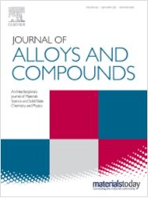
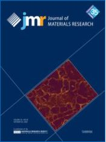
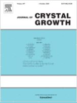
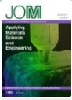
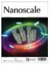

12 selected papers

A. Talaat, M.V. Suraj, K. Byerly, A. Wang, Y. Wang, J.K. Lee, P.R. Ohodnicki, "Review on soft magnetic metal and inorganic oxide nanocomposites for power applications," Journal of Alloys and Compounds, 2021
Su, Y.-D.; Preger, Y.; Burroughs, H.; Sun, C.; Ohodnicki, P.R., "Fiber Optic Sensing Technologies for Battery Management Systems and Energy Storage Applications," Sensors, 2021

P. Ohodnicki, E.J. Kautz, A. Devaraj, Y. Yu, N. Aronhime, Y. Krimer, M.E. McHenry and A. Leary, "Nanostructure and compositional segregation of soft magnetic FeNi-based nanocomposites with multiple nanocrystalline phases," Journal of Materials Research, 2020
Ahmed Talaat, David W. Greve, M.V. Suraj, Paul R. Ohodnicki, "Electromagnetic assisted thermal processing of amorphous and nanocrystalline soft magnetic alloys: Fundamentals and advances," Journal of Alloys and Compounds, 2020

Subhabrata Bera, Paul Ohodnicki, Keith Collins, Matthew Fortner, Yoosuf N. Picard, Bo Liu, Michael Buric, "Dopant segregation in YAG single crystal fibers grown by the laser heated pedestal growth technique," Journal of Crystal Growth, 2020
Mudabbir Badar, Ping Lu, Qirui Wang, Thomas Boyer, Kevin Chen, Paul Ohodnicki, "Monitoring internal power transformer temperature using distributed optical fiber sensors," Proc. SPIE 11405, Optical Waveguide and Laser Sensors, 114050F, 2020
M. Badar, P. Lu, Q. Wang, T. Boyer, K. P. Chen and P. R. Ohodnicki, "Real-Time Optical Fiber-Based Distributed Temperature Monitoring of Insulation Oil-Immersed Commercial Distribution Power Transformer," IEEE Sensors Journals, 2020
V. Cabral do Nascimento, S. Moon, K. Byerly, S. D. Sudhoff and P. R. Ohodnicki, "Multi-objective Optimization Paradigm for Toroidal Inductors with Spatially Tuned Permeability," IEEE Transactions on Power Electronics, 2020

Byerly, K., Ohodnicki, P.R., Moon, S.R. et al., "Metal Amorphous Nanocomposite (MANC) Alloy Cores with Spatially Tuned Permeability for Advanced Power Magnetics Applications," The Journal of The Minerals, Metals & Materials Society 70, 879–891 (2018)
Devkota, J.; Ohodnicki, P.R.; Greve, D.W., "SAW Sensors for Chemical Vapors and Gases," Sensors, 2017

Paul R. Ohodnicki, Jr., Michael P. Buric, Thomas D. Brown, Christopher Matranga, Congjun Wang, John Baltrusa and Mark Andioa, "Plasmonic nanocomposite thin film enabled fiber optic sensors for simultaneous gas and temperature sensing at extreme temperatures," Nanoscale, 2013, 5, 9030-9039
Leary, A.M., Ohodnicki, P.R. & McHenry, M.E., "Soft Magnetic Materials in High-Frequency, High-Power Conversion Applications," The Journal of The Minerals, Metals & Materials Society 64, 772–781 (2012)